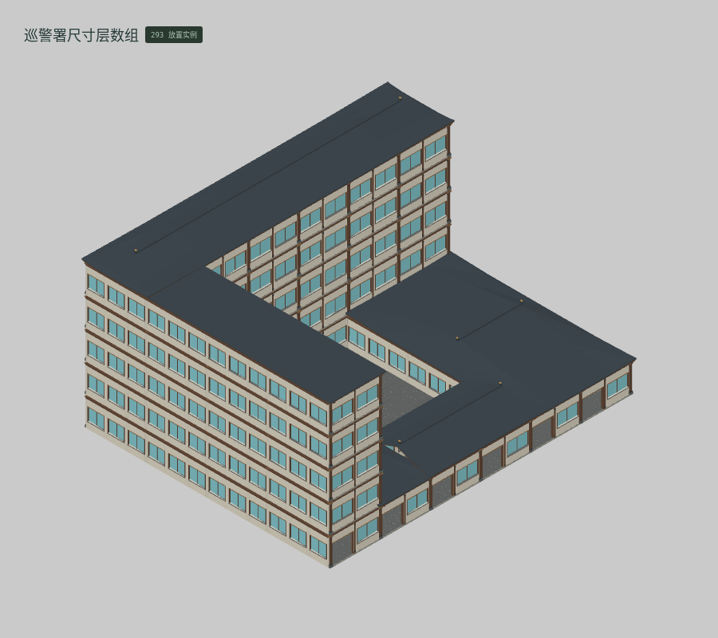
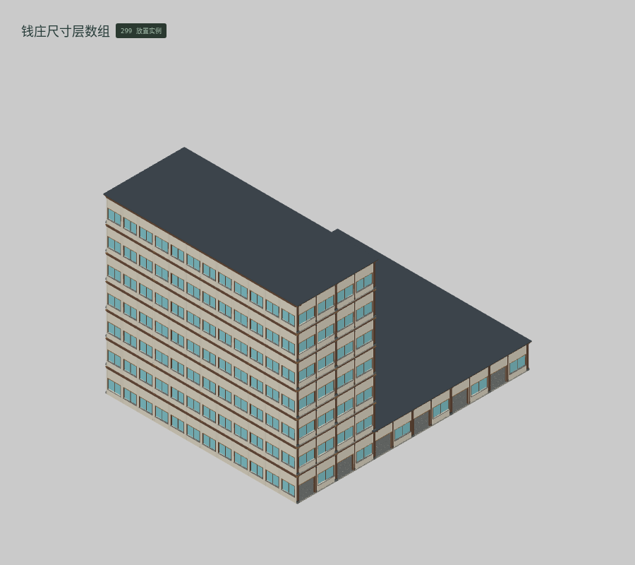
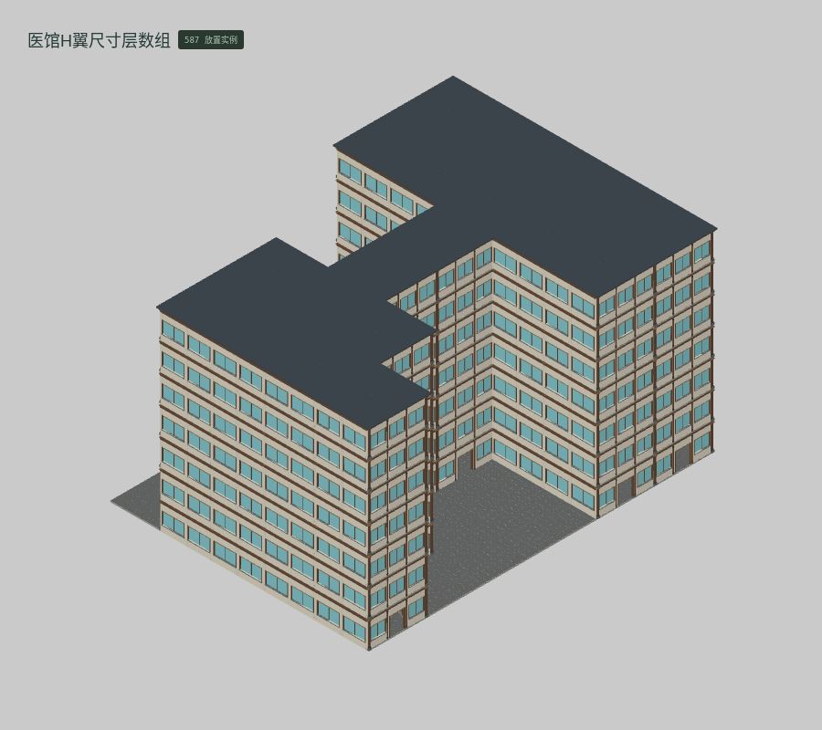
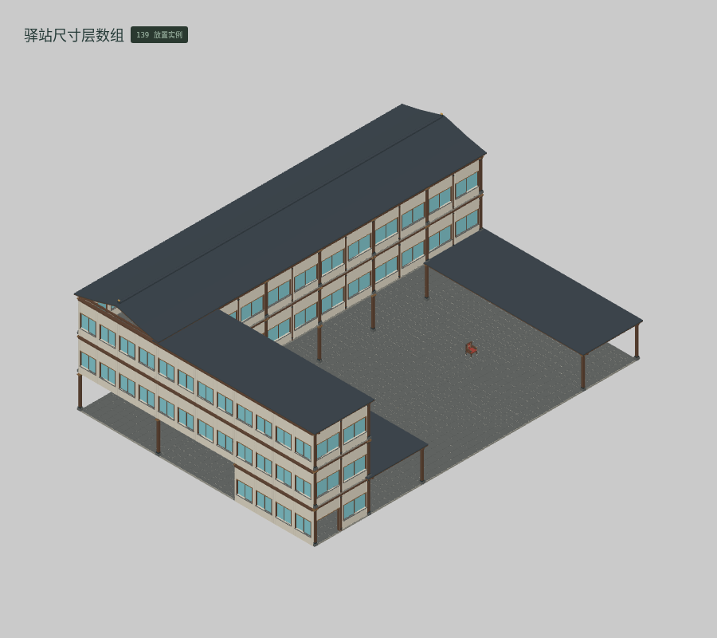
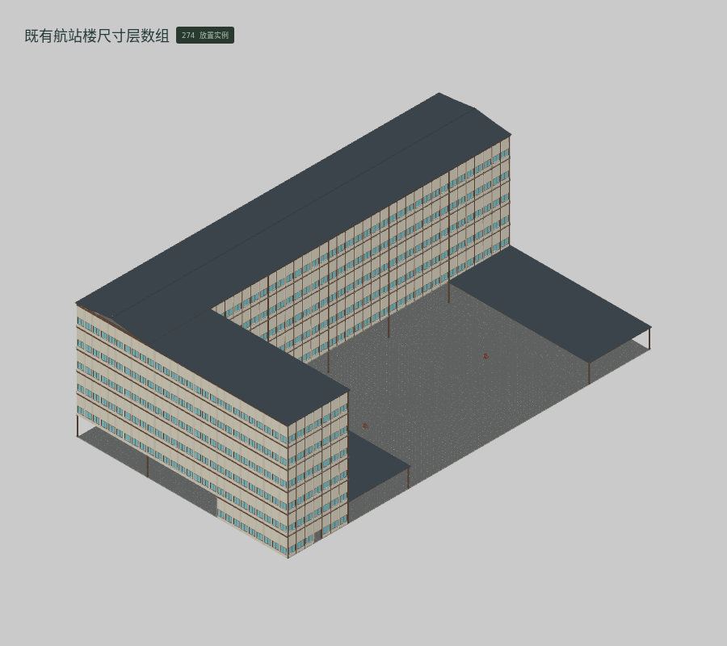
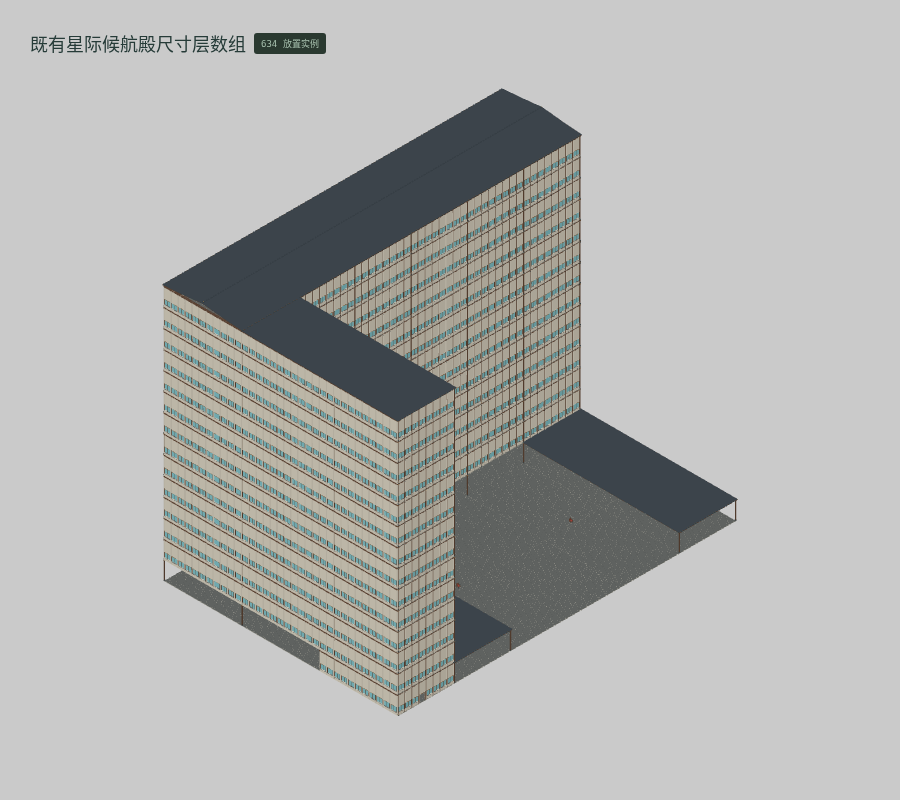
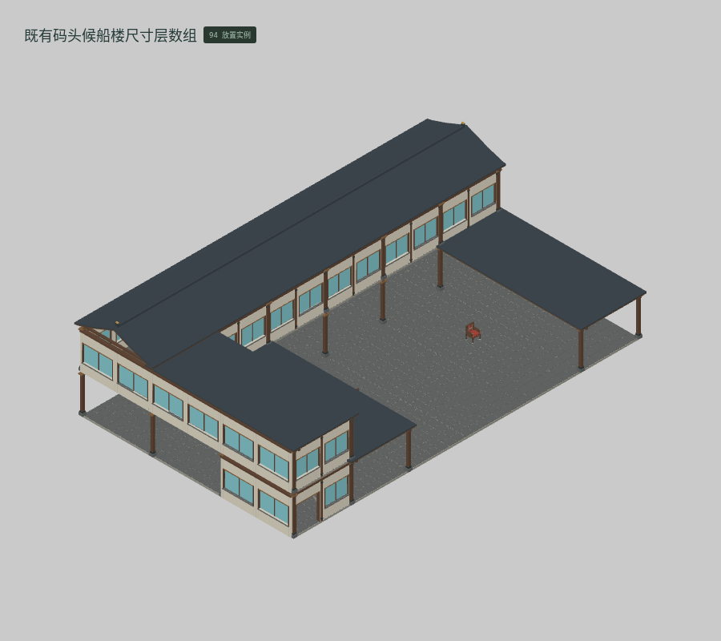

<!doctype html><meta charset="utf-8"><style>*{box-sizing:border-box}body{margin:0;background:#dfe1dd;color:#273d34;font:18px system-ui,'PingFang SC'}header{padding:26px 36px}h1{font-size:30px;margin:0 0 10px}main{display:grid;grid-template-columns:repeat(4,1fr)}figure{margin:0;border:1px solid #b7c0b6;background:#d4d8d1}img{display:block;width:100%}figcaption{padding:13px 22px 18px;font-size:19px}small{display:block;font-size:13px;margin-top:5px}footer{padding:24px 36px}</style><header><h1>云山 · M060 · 按参考图重建的 7 件三维候选</h1>真实编辑器截图 · 基础块件与连续网格 · 不使用 AO / 辉光</header><main><figure><figcaption><b>BUILT-031 巡警署尺寸层数组</b><small>母版参数变体 · 293 实例 · 106,640 体素格 · 实际边界 40.40 × 21.28 × 32.80 m</small></figcaption></figure><figure><figcaption><b>BUILT-032 钱庄尺寸层数组</b><small>母版参数变体 · 299 实例 · 203,024 体素格 · 实际边界 42.00 × 31.12 × 34.80 m</small></figcaption></figure><figure><figcaption><b>BUILT-033 医馆H翼尺寸层数组</b><small>母版参数变体 · 587 实例 · 251,079 体素格 · 实际边界 48.00 × 26.94 × 36.40 m</small></figcaption></figure><figure><figcaption><b>BUILT-034 驿站尺寸层数组</b><small>母版参数变体 · 139 实例 · 110,507 体素格 · 实际边界 42.00 × 14.88 × 30.80 m</small></figcaption></figure><figure><figcaption><b>BUILT-035 既有航站楼尺寸层数组</b><small>母版参数变体 · 274 实例 · 110,537 体素格 · 实际边界 113.60 × 38.28 × 66.40 m</small></figcaption></figure><figure><figcaption><b>BUILT-036 既有星际候航殿尺寸层数组</b><small>母版参数变体 · 634 实例 · 110,545 体素格 · 实际边界 122.80 × 94.68 × 85.20 m</small></figcaption></figure><figure><figcaption><b>BUILT-037 既有码头候船楼尺寸层数组</b><small>母版参数变体 · 94 实例 · 110,503 体素格 · 实际边界 34.80 × 9.88 × 21.60 m</small></figcaption></figure></main><footer>每格独立适配画幅，各模板不共用同一比例尺。几何候选，尚未通过人工美术验收。原生体素与连续网格分别保存和导出。</footer>